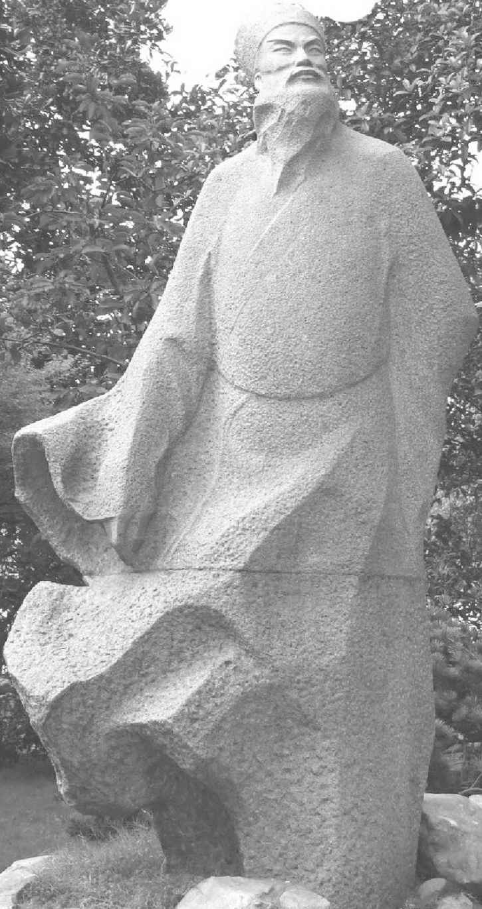

第二十三章 百姓之友
苏东坡单枪匹马只身奋斗，打算改革吏治，他算失败了。他看到一次饥荒将至，他要朝廷预做防备，在这一方面他没有成功。不过，由于他奋战不懈，对抗下两年的阴惨的鬼影，他是把老百姓从王安石新政的恶果中救了出来。据苏东坡说，几百万人民已遭毁灭，有的因欠债而关在监狱之中，有的为逃避偿还欠债的本金和利息，已经远离了故乡。朝廷有钱收入，国家却破产了。中国老百姓是朝廷常年的债务人。朝廷查封了太多的抵押品，对于远走天涯海角的逃债人，要如何收债呢？王安石已死，并且带着朝廷赐予的最高的荣誉头衔埋葬了。现在留给苏东坡的是求朝廷全面宽免人民的债务，免得家家破产赤贫。死者长已矣。姑且放宽心肠，睁大好奇的眼睛，注视那群官僚大人深不可测的头脑，他们心那么冰冷，那么残忍，但又那么冷静，看他们在王安石创设的那无边旧债的荆棘地里，怎样玩他们狙击谋杀黎民百姓的游戏吧。
苏东坡一回到京师，对他的欢迎只是一连串的攻击批评之声。政局对朔党诸君子是够危险的。因为情形似乎是太皇太后召他还京，是要他官升宰相。他弟弟子由一直高升，到现在已是尚书右丞。尚书、中书、门下三省，是宋朝政府的三个主要部门。元祐七年（一〇九二年）六月，子由又高升了，升成了门下侍郎。按当时广泛的说法，也是宰相之一。政敌的不安，自非无故。现在太皇太后又召他那才气过人的兄长还朝。只为了自存也罢，苏东坡的这群政敌非要决一死战不可了。
贤昆仲二人现在均身为高官，招人艳羡，因此他们谈论很久，究竟二人谁离却京都，好使另一人免除官场的忌妒。苏东坡决心离去，但是子由认为弟弟应当让兄长。苏东坡接受了御史的一阵批评的风暴欢迎之后，越发想离开京都，乃第五次、第六次恳请外放。苏东坡越恳求外放，他的政敌越觉得情势严重。程颐的门人贾易在他一千五百字的表章中说，苏东坡上表请辞，是向朝廷施加压力以求相位。凡是贾易认为在那篇表章中可发掘用以诋毁苏东坡的，他都用尽了。神宗驾崩后两个月，苏东坡在扬州一个寺院墙壁上写的一首奇妙的小诗，现在完全在朝廷上喧嚷出来。西湖的苏堤被指责为“于公私并无利害”。他被控告关于杭州灾情，始终误报朝廷。苏东坡上一道名称甚怪的表章，名为《乞外补回避贾易札子》，里面说：“易等但务快其私忿，苟可以倾臣，即不顾一方生灵坠在沟壑。”这当然是在朝廷上公开地争吵。在苏东坡政敌当中，有此贾易——后来等朔党被推翻之后，贾易曾背弃朔党；另一个人，叫杨畏，绰号人称“杨三变”，因为他曾先后背叛过王安石、司马光、吕大防、范纯仁等，他心头有一连串令人眼花缭乱的鬼主意。在苏东坡这一面，有不少朋友正在当权。这次斗争成了和局，实在是不得不尔，因为双方目标一致。他的政敌志在驱逐他离开京师，而苏东坡正好别无所求，但求一走了之。不管有饥荒无饥荒，三个月后，苏东坡外放到颍州为官时，这一场政治斗争也就达到了合理的收场。但是苏东坡的任务尚未完成。因为元祐六年（一〇九一年）又是五谷不登，饥馑灾情愈形严重。他在颍州为官八个月，又在扬州七个月。这样，他算有机会一见江北情况。在元祐六年，他在颍州之时，一次出城去，看见成群的难民从东南逃向淮河边。他陈报说老百姓开始撕下榆树皮，和马齿苋、麦麸一起煮粥吃。流匪蜂起，他陈报抢案，也为数日多。他预测可怕之事恐怕方兴未艾。倘若真正发生，将会难民成群逃离江南。老弱倒于路旁，少壮者流为盗贼。
在旧年除夕日，苏东坡和皇族同僚赵令畤登上城楼，看难民在深雪中跋涉而行。赵令畤说次日天还没亮，他就被苏东坡叫醒了。
苏东坡告诉他：“我一夜无法入睡。对那些难民我总得帮助他们一点儿才对。也许咱们能从官仓里弄点儿麦子，给他们烙点儿饼吃。内人说我们经过陈州时，傅钦之告诉我们你协助他赈济成功的经过。我们忘记问他到底是怎么做的，所以现在我才找你问。你想到什么办法没有？”
赵令畤说：“我倒是想过。这些人只需要柴和米。官仓里现有几千石米，我们立刻就可以发，在酒务局还有很多柴——咱们可以发给这些穷人。”
苏东坡回答说：“好，立刻就办。”
于是立刻先救济近邻。可是邻近地区淮河以南，官家还在征米柴税呢。苏东坡立刻奏明朝廷废止此种荒唐事，而今柴米急需自由运输，以济燃眉。
在元祐七年（一〇九二年）二月，苏东坡调到扬州。他的长子迈已由朝廷任命在外地为官。他到扬州途中去视察安徽各地时，随身带着两个小儿子。他让随员不要跟随，亲自到村中与村民交谈。他看见一个令人无法置信的情景：只见各处是青翠的麦田，但大多的农家则荒废无人。一年的丰收是村民最怕的事，因为县衙的衙吏和兵卒在此时来逼索以前的本金利息，并且把人带走关在监狱里。苏东坡来到了扬州，在谢恩表里他说：“丰凶皆病。”中国的农民和生意人都落入王安石新政的陷阱里了。他们只有两条路走：一是遇歉年，忍饥挨饿；一是遇丰年，锒铛入狱。
这是王安石新政的后果。苏东坡在杭州时，除去请款、请米、预防灾荒，不断麻烦朝廷之外，还给朝廷上了一道长表章，请求宽免老百姓欠朝廷的债务。商业萧条，富户早已不复存在。朝廷命令以现款交税，货币在市面上已不易见到。国家的钱现在都集中在国库里，朝廷正用这些钱进行西北的战事。与二十年前相比，杭州的人口已减到以前的百分之四五十。朝廷也在遭受困难，正如苏东坡所指出的，酒税的收入已经从每年三十万贯减到每年二十万贯以下。国家资本派已经把小生意人消灭。使富人为穷邻居担保的办法，已经把很多富人拖累得家败人亡。意想不到的官司和纠纷都由青苗贷款而起。有人也许是在官员的纵容之下，用别人的名义贷了款。那些人或否认那笔贷款，或根本并无此人。而官家的档案竟是一团混乱。官家手中有千万份抵押的财产，其中有些已然由官方没收。没收的财产难道抵销得了借出的款项吗？足可以抵销本金和利息吗？利息到底怎么计算呢？更有好多人坐监，只因为在官司纷乱当中，买了产业，不知那份财产真正的主权当属何人。每个人都欠人钱。地方法庭只忙于处理人民欠官家的债务案件，私人诉讼就搁置不闻不问了。民间贸易一向以信用为基础，现在因为人人信用不佳，生意也陷于停顿。官场的腐败到了令人无法置信的程度。杭州每年要向皇帝以绸缎进贡。有些质料差的绸缎往往为税吏所抛弃，他只愿全数收上品货。由于他抛弃了货色较差的，损失的钱还要补缴。当地太守要从抛弃的坏绸缎弄出钱来，于是强迫人民以好绸缎的高价钱买去那些坏绸缎。地方太守上遭上司的逼迫，下遭小吏的捉弄，那些小吏靠官方的“呆账”压榨百姓以自肥，正如同草原上的羊啃啮青草一般。
朝廷的淡漠拖延，到了惊人程度。远在元祐五年（一〇九〇年）五月（实为六月——编者注），苏东坡曾上表朝廷，呼吁宽免百姓的官债。新当政者上台，司马光已经开始退还官家没收的人民财产。但是朝廷的原意总是被官僚们弄得面目全非。使苏东坡气愤难平的，对官方办事的程序方式之争，真是一言难尽，不须细说了。有些官僚认为，朝廷下令退还没收的产业，只限于三估以后“籍纳”的产业，并不包括官方在现场“折纳”的案件在内。两者之间是有微妙的差异的。官僚认为当年立即接受官家“折纳”的人，已经承认估价公平，不必再发还他的产业。对这种划分，苏东坡颇为愤慨，他以为不符合圣旨的本意。
不过这只是百姓的权益被官僚骗取的一个例证而已。苏东坡把圣旨被曲解误用的事，一件件指出，都是使百姓蒙受损失的。他堂堂正正的理由是，民脂民膏已挤干，他看不出来再从无力偿还的人民身上去收二十年的老账，这样对朝廷还有什么好处。比如说，酒务方面欠债的一千四百三十三件案子之中，经过官家二十年来的催缴，尚有四百零四件使人民弃家逃走，不敢重返故乡。而有关钱数不过约有一万三千四百贯而已。即便情况一直不变，一直催讨，也不会收回此一笔欠债，何不立即宽免，以收民心？
在苏东坡等了一百零八天音讯杳然之后，那年九月，他又上一本，追问以前所上的表章，有何下文。这是上太皇太后的机密本章，太皇太后交给了中书省，饬令速办。十二月十九日，户部有给苏东坡的复文，说原本章遗失，要他再上一份。元祐六年（一〇九一年）一月九日，苏东坡又抄一本送至。附加注明，说二十年来商业萧条，官家只有恢复老百姓的信用和存款，税收才增收有望。这是那份呈文的结尾语。但是事过两年，朝廷仍然毫无行动。
同时，江苏湖泊地区又逐年歉收。元祐七年（一〇九二年）饥荒酿成巨灾。据苏东坡的报告，苏州、湖州（吴兴）、秀州（嘉兴）地区，人民死亡半数。大批逃荒的难民渡江北来。后来虽然积水渐退，田界全失。苏东坡说：“有田无人，有人无粮，有粮无种，有种无牛，饿死之余，人如鬼腊。”据苏东坡的看法，在朝廷尽量扶持之下，此一地区需要十年才能恢复。他又指出，倘若当初朝廷采取他所建议的措施，所需款项不及后来赈济所需之半数。他说：“小人浅见，只为朝廷惜钱，不为君父惜民。”呜呼，天下苍生，奈何！奈何！
杭州苏东坡石像 石雕 现代
苏东坡为杭州这座江南名都留下了太深的记忆，苏堤、东坡肉、历史上第一个公立医院、他的爱民如子、他令人惊艳的诗词……不论当权者是否认可，千百年以来，苏东坡的功绩早已铭刻在杭州百姓的心中。
元祐七年（一〇九二年）五月十六，苏东坡又再谈宽免官债一事。他在自己治下，不管别的官吏如何，把圣旨照自己的看法解释，宽恕了圣旨所列的一切案件，情况不明的疑案则延期一年再办，等待朝廷决定。他深信人民的信用若不恢复，情况的严重不会和缓，商业也不能复原。巨债高利则像百姓项间的石头枷锁。百姓的信用一旦毁灭，商业必然随之瘫痪。万恶必由此而生。他又上了一道长五千字的表章，细论处理呆账的办法。有些人为买公产而欠债，还有青苗贷款债、官谷债、春税和秋税债，也有人欠市易局的债，而市易局已经废止，朝廷下令分十期（半年一期）清还，有人因旧债还不出而又欠了新债。此等情况和在杭州所上表章中列举的四种债务，共达十种之多，朝廷终于先后下令部分宽免。苏东坡回顾一下全部情形，拟定了详尽的办法。最后，他说：
臣顷知杭州，又知颍州，今知扬州，亲见两浙、京西、淮南三路之民，皆为积欠所压，日就穷蹙，死亡过半。而欠籍不除，以至亏欠两税，走陷课利，农末皆病，公私并困。以此推之，天下大率皆然矣。
臣自颍移扬，舟过濠、寿、楚、泗等州，所至麻麦如云。臣每屏去吏卒，亲入村落，访问父老，皆有忧色，云：“丰年不如凶年。天灾流行，民虽乏食，缩衣节口，犹可以生。若丰年举催积欠，胥徒在门，枷棒在身，则人户求死不得。”言讫泪下，臣亦不觉流涕。又所至城邑，多有流民……
臣闻之孔子曰：“苛政猛于虎。”昔常不信其言，以今观之，殆有甚者。水旱杀人，百倍于虎；而人畏催欠，乃甚于水旱。臣窃度之，每州催欠吏卒，不下五百人，以天下言之，是常有二十余万虎狼散在民间，百姓何由安生，朝廷仁政何由得成乎？
这道表章呈上去一个月之后，他又上一道私人表章给太皇太后，建议太皇太后颁布如他所拟的如此一道圣旨：“访闻淮浙积欠最多，累岁灾伤，流殍相属。今来淮南始获一麦，浙西未保丰凶。应淮南东西、浙西诸般欠负，不问新旧，有无官本，并特与权住催理一年。”使久困之民，稍知一饱之乐。随后，他又请太皇太后按照他前一道详细的表章分别拟定条文，处理债务。
元祐七年（一〇九二年）七月，苏东坡所催请各点，朝廷正式颁布施行。他是如愿以偿了。表章中所提的公债全部由朝廷下令宽免了。